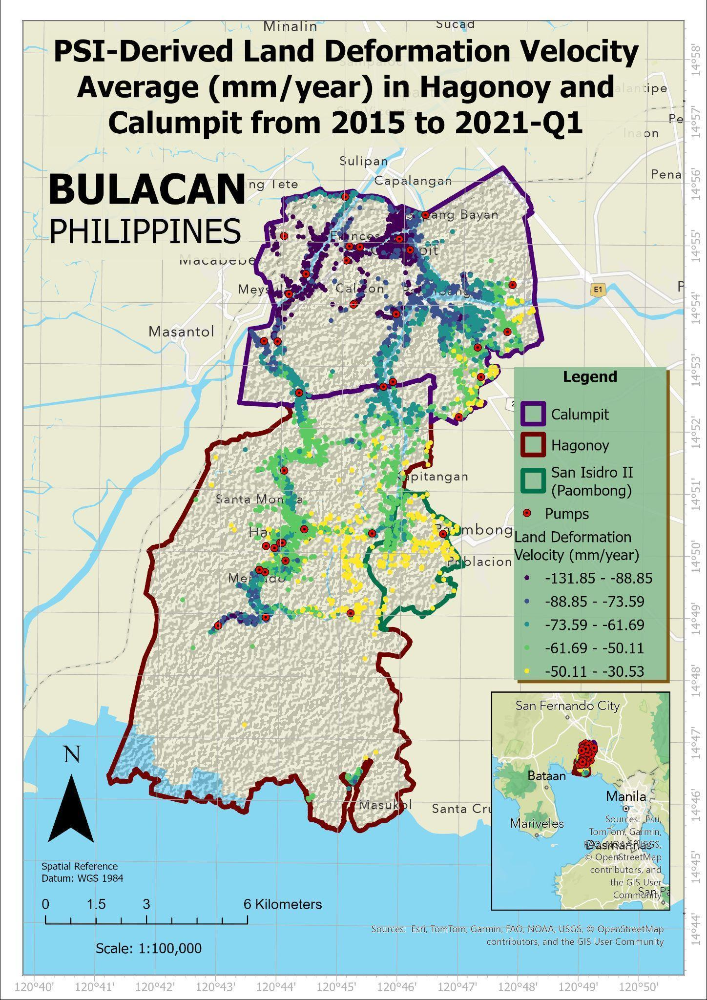

A closer look at Hagonoy.
Ground movement can vary from one place to another. Explore Hagonoy and see what local research tells us about land subsidence.
Where has the ground been sinking?
Researchers used satellite observations to study ground movement in Hagonoy and Calumpit. The map below shows average land deformation from 2015 to the first quarter of 2021.
The image comes from a research paper by Maclang, Narca, Reyes, and Mabaquiao, published in 2026.

Published in ISPRS Annals of the Photogrammetry, Remote Sensing and Spatial Information Sciences.
View Figure 3 in the Original PDF ↗
© Authors 2026. Reproduced without modification under CC BY 4.0 . The original legend, scale, and map credits are retained.
Find Hagonoy on the map.
Use this interactive map to explore Hagonoy and nearby places. You can zoom in or open a larger map in a new tab.
Location map provided by Google Maps. An internet connection is needed to load it.
Open Google Maps ↗What do these changes mean?
Learn why the ground can sink, how it may affect daily life, and what communities can do to become better informed.